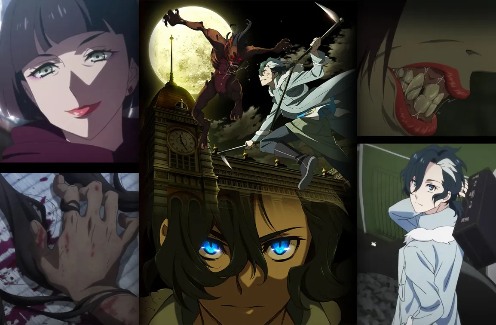

Set in 1930s Tokyo, Sirius the Jaeger is an anime about a group of vampire hunters searching for the Ark of Sirius. They soon become embroiled in a larger conspiracy involving the fate of the world. With action, animation, and a gripping story, it's a must-watch for fans of supernatural anime.
The series is set in an alternate version of 1930s Tokyo, where vampires exist and pose a threat to humans. The main character, Yuliy, is a member of a clan of werewolves, who were hunted down and nearly driven to extinction by vampires. Yuliy is seeking revenge against the vampires for the death of his family and the destruction of his clan. He also possesses the unique ability to transform into a werewolf, which he uses to aid the Jaegers in their quest to find Sirius.
The Jaegers are a group of skilled vampire hunters who are searching for the Ark of Sirius, a powerful artifact that is said to be able to kill Sirius, the most powerful vampire of them all. The Jaegers believe that if they can obtain the Ark, they will be able to put an end to Sirius's reign of terror once and for all. However, they soon discover that they are not the only ones seeking the Ark, as various factions and characters are also on the hunt for the artifact.
The series is a mix of action, adventure, and mystery, with plenty of intense fight scenes and suspenseful moments. Yuliy and the Jaegers encounter a variety of characters and factions along their journey, including a group of vampire researchers, a rival clan of werewolves, and a mysterious woman who seems to have a connection to Sirius.
As the story unfolds, Yuliy and the Jaegers must navigate through the dangers and challenges of their mission, while also facing their own personal struggles and conflicts. The series explores themes of trust, loyalty, and the complexities of relationships between different groups of people.
Overall, Sirius the Jaeger is a thrilling anime series with a unique setting, interesting characters, and a compelling story that will keep viewers engaged from start to finish.
